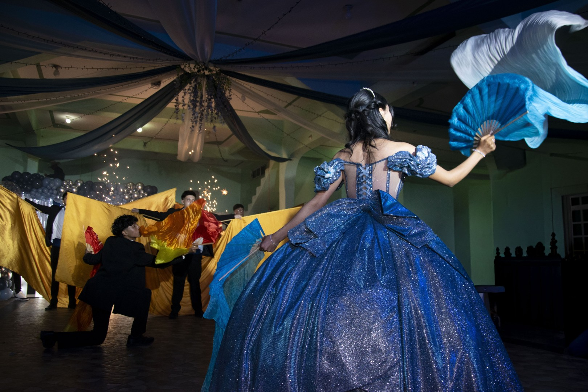
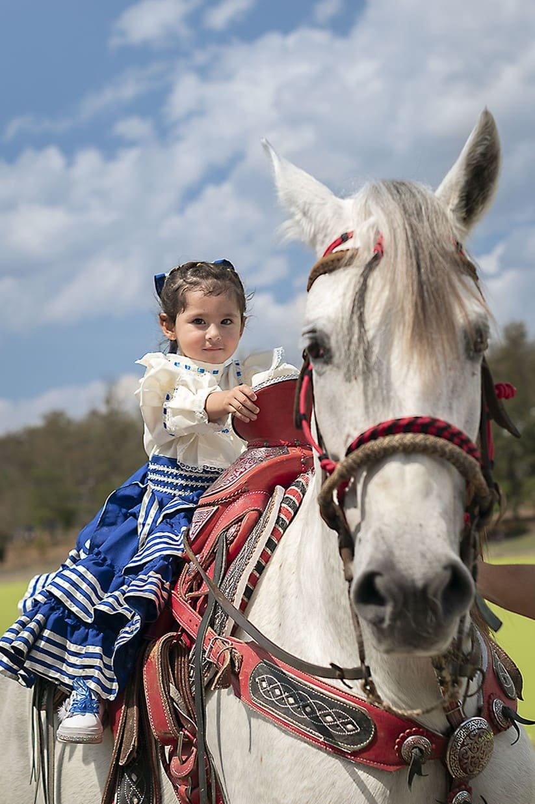
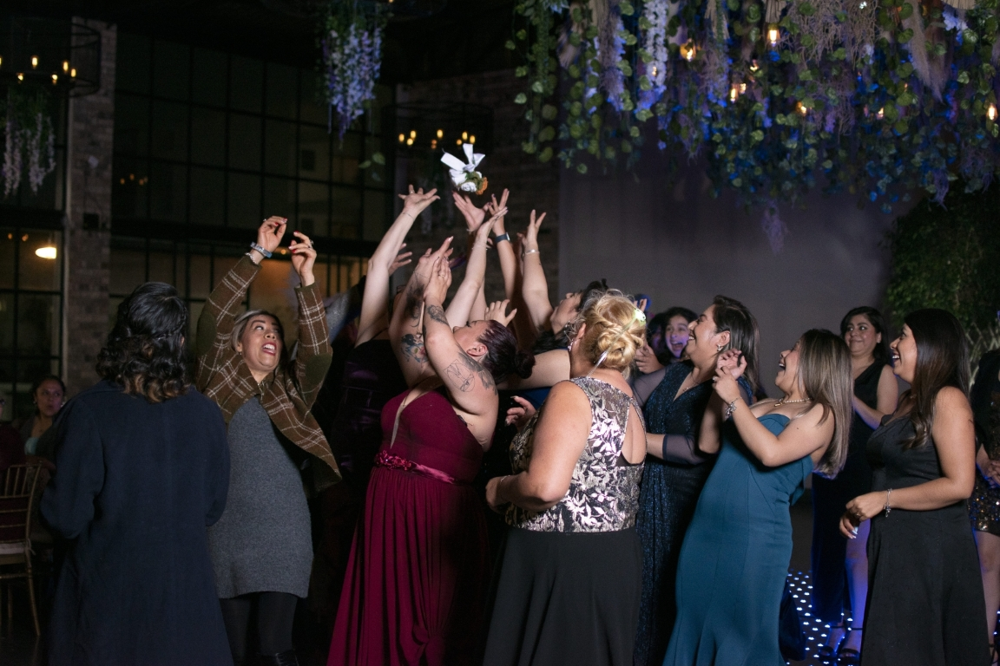
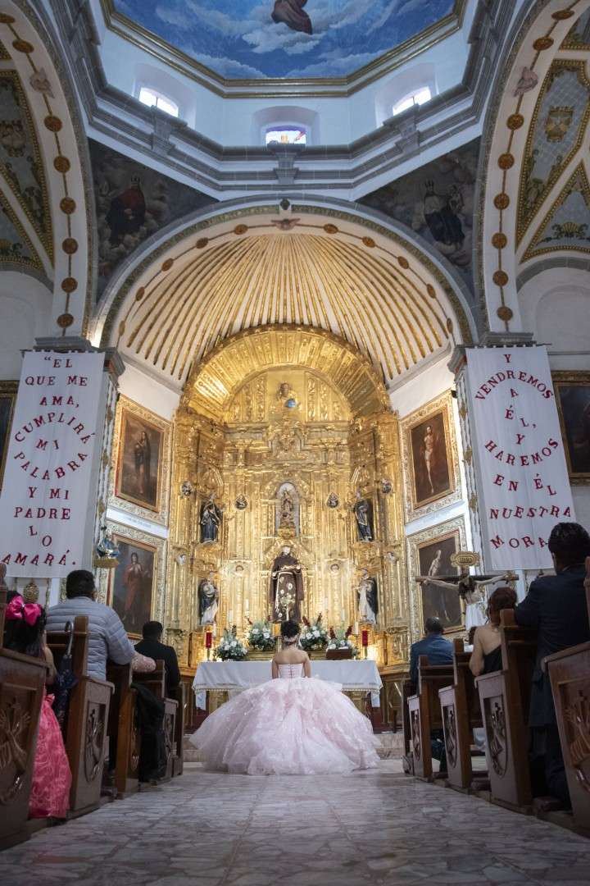
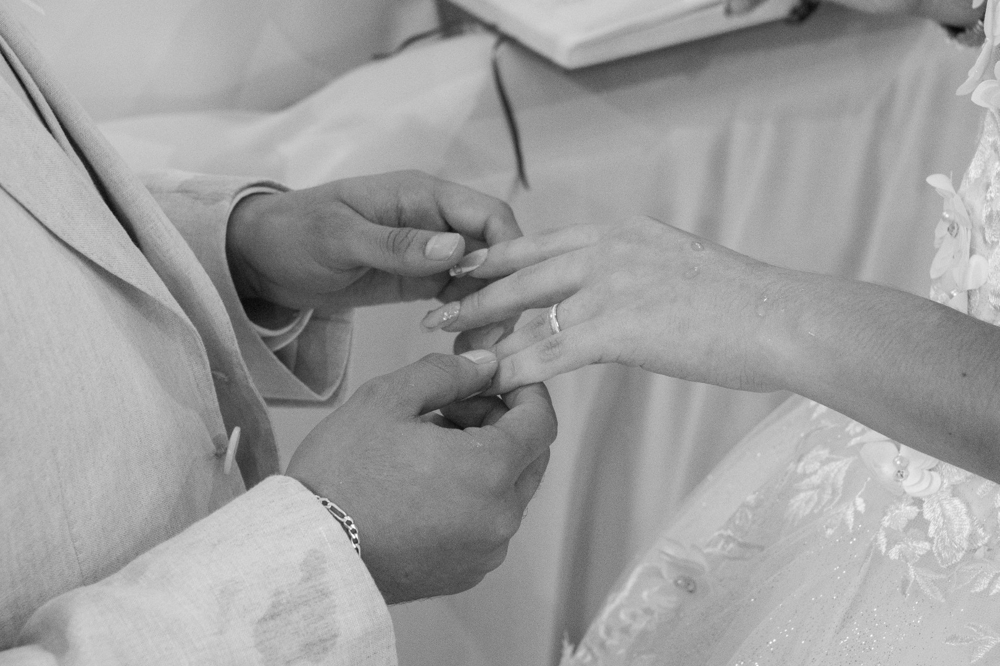
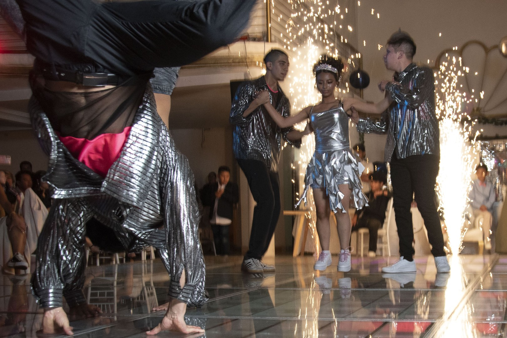
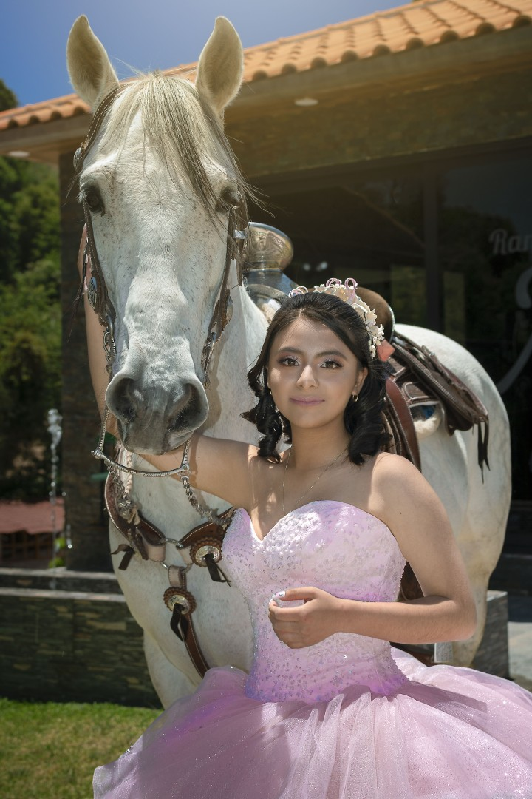
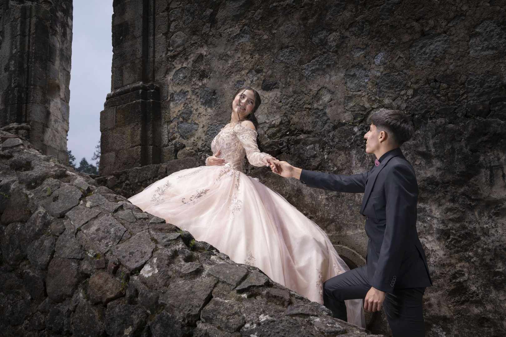
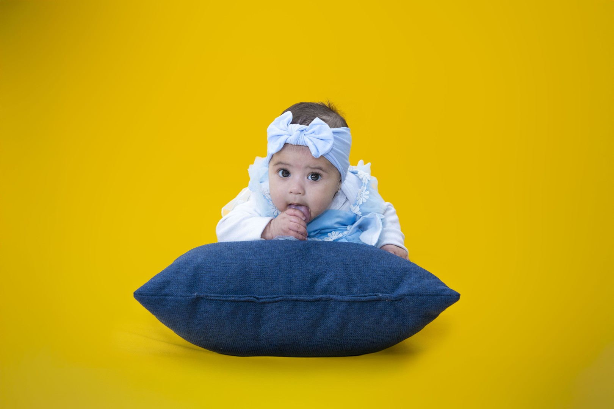

Serie 001 – 035
Portafolio
 RETRATO_01
RETRATO_01
RETRATO_02
BODA_01
BODA_03
 BODA_04
BODA_04

XV_01 XV_02
XV_02
 RETRATO_03
RETRATO_03

RETRATO_04 RETRATO_05
RETRATO_05
 CONCIERTO_01
CONCIERTO_01
CONCIERTO_02
CONCIERTO_03
 CONCIERTO_04
CONCIERTO_04
RETRATO_06
 RETRATO_07
RETRATO_07
NEWBORN_01
NEWBORN_02
RETRATO_08
 RETRATO_09
RETRATO_09
 RETRATO_10
RETRATO_10
 RETRATO_11
RETRATO_11

BODA_05 BODA_06
BODA_06
XV_AÑOS_03
 XV_AÑOS_04
XV_AÑOS_04

XV_AÑOS_05 XV_AÑOS_06
XV_AÑOS_06
RETRATO_12

 Mascota_01
Mascota_01
 Mascota_02
Mascota_02
 RETRATO_14
RETRATO_14
Newborn_03
OTROS_01
RETRATO_15
 OTROS_02
OTROS_02

BODA_07 XV_07
XV_07
 RETRATO_16
RETRATO_16
BODA_08

XV_08
XV_09 XV_10
XV_10
 XV_11
XV_11

XV_12
Maternidad_01
Maternidad_02
Maternidad_03
 RETRATO_17
RETRATO_17
RETRATO_18

Newborn_04